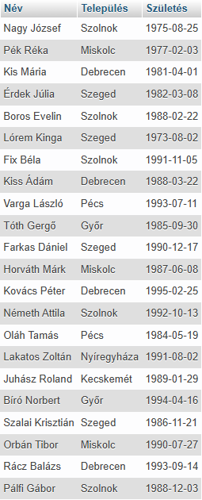

SELECT
A SELECT utasítást arra használjuk, hogy adatokat válasszunk ki egy adatbázisból.
A visszaadott adatokat egy eredménytáblában, az úgynevezett eredményhalmazban tárolja a rendszer.
Példa:
SELECT Név, Település,
Születés
FROM dolgozók;


Látható, hogy az eredménytábla a kiválasztott mezőkből áll. Több sorban (rekord) is szerepelhet ugyanaz az érték ugyanabban az oszlopban (mező).